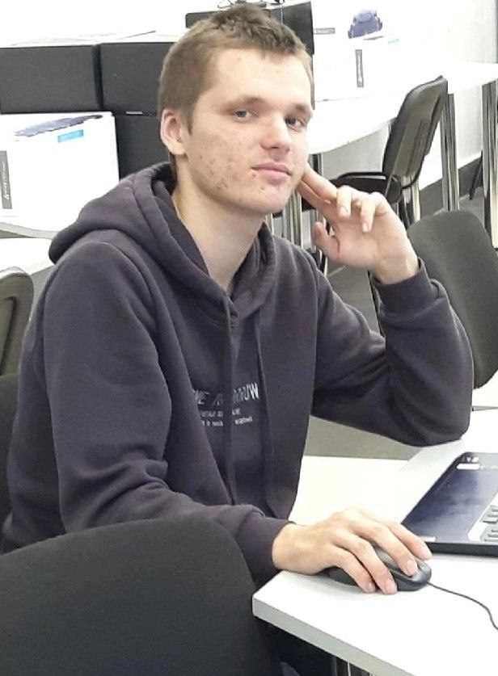

Инциклопедия экскурсий

Специалист, работающий на должности Web-дизайнера, занимается созданием страниц для сайтов. Профессия появилась несколько десятков лет назад. Занимаются этим видом деятельности люди, имеющие специальное образование и навыки работы с программированием.
Посетители нашего сайта смогут за несколько минут создать собственное резюме веб-дизайнера пример которого предоставлен для бесплатного пользования. Соискателю остается заполнить блоки анкеты данными, взятыми из дипломов, трудовой книжки.